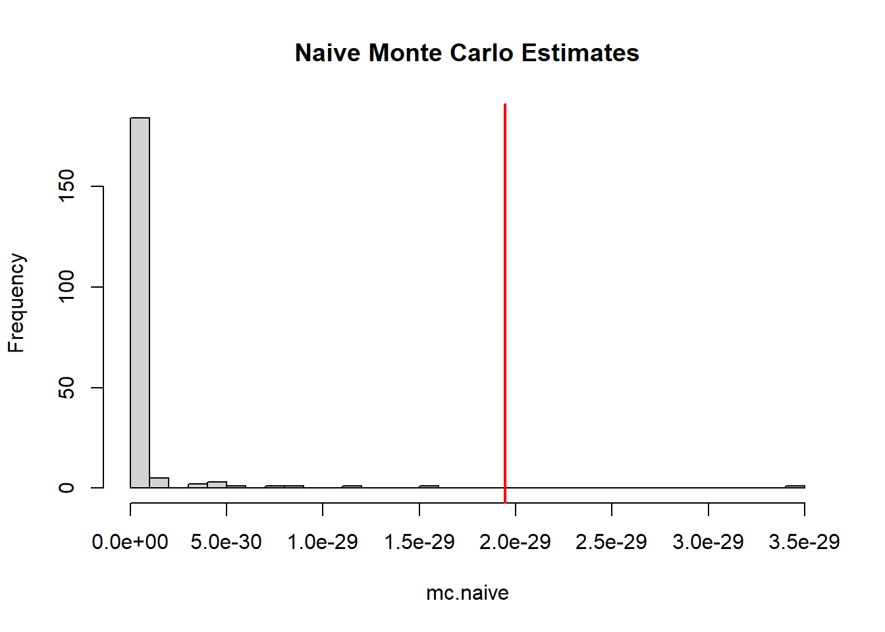
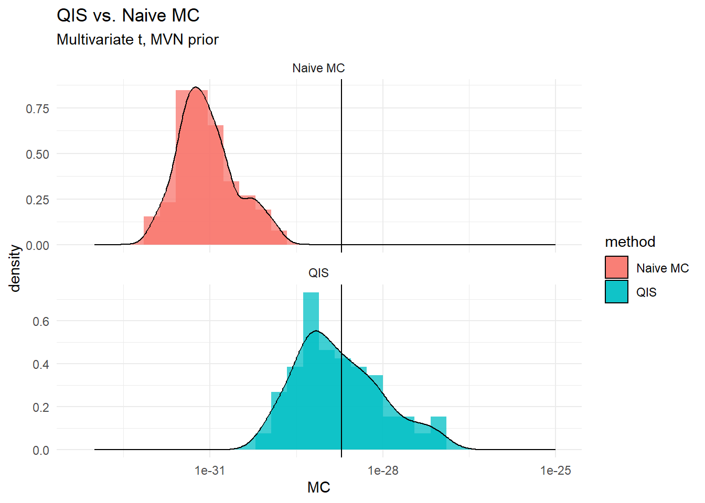

rm(list = ls())
# Set global R options
options(scipen = 4)
# Set the graphical theme
ggplot2::theme_set(ggplot2::theme_light())
# Set global knitr chunk options
knitr::opts_chunk$set(
warning = FALSE,
message = FALSE,
cache = TRUE
)
set.seed(123)
library(truncnorm)
library(pracma)
library(ggplot2)QIS for Multivariate t
Multivariate \(t\) Example
Estimation by QIS, and Naive MC
We define three essential functions below:
vertical.gridwill generate an \(x\)-grid for integration using either the exponential weights (for original nested sampling), or uniform for Yakowitz (Quantile Importance Sampling. )sQis simply a sample quantile calculator.
# Generate grid
vertical.grid = function(l,N,type = NULL){
# "u" - uniform
# "e" - exponential
if(type == "u"){
ugrid = runif(N)
res = c(sort(ugrid),1)
# res = sort(runif(N))
}else if(type == "e"){
res = exp(-(0:l)/N)
}
return(res)
}
# Quantile
sQ = function(q,Y){
# q-quantile of Y
N = length(Y)
res = Y[ceiling(N*q)]
return(res)
}Naive Monte Carlo
# Test example
# Prior and Likelihood
set.seed(123)
d = 50
tau = 1
nu = 2
trueZ <- 1.9445572*10^(-29) ## U(26,2,1), d = 50, nu = 2, s = 1
dtmvr <- function(x, nu){
d = length(x)
logden = -0.5*(nu + d)*log(1 + (t(x)%*%x)/nu)
return(exp(logden))
}
library(LaplacesDemon)
# dtmvr <- function(x, nu){
# d = length(x)
# mu = rep(0,d)
# S = diag(d)
# return(exp(dmvt(x, mu, S, df=nu, log=T)))
# }
r = 200
# d = 50
mc.naive = NULL
verbose = TRUE
for(i in 1:r){
if(isTRUE(verbose) && i %% 10 == 0)
cat("Iteration ",i, "\n")
M = 10000
# X = rmvn(M, rep(0,d), eye(d))
Y = numeric(M)
for(j in 1:M){
Y[j] = dtmvr(x = rnorm(d, 0, 1), nu = 2)
}
mc.naive = c(mc.naive,mean(Y))
}Iteration 10
Iteration 20
Iteration 30
Iteration 40
Iteration 50
Iteration 60
Iteration 70
Iteration 80
Iteration 90
Iteration 100
Iteration 110
Iteration 120
Iteration 130
Iteration 140
Iteration 150
Iteration 160
Iteration 170
Iteration 180
Iteration 190
Iteration 200 mean(mc.naive)[1] 6.959908e-31hist(mc.naive, breaks = 30, main = "Naive Monte Carlo Estimates")
abline(v=trueZ,col="red",lwd=2)
Quantile Importance Sampling
set.seed(123)
## QIS
N = 60
r = 200
mc.qis = NULL
verbose = TRUE
simu.grid.unif = vertical.grid(l=NULL,N,type = "u")
for(i in 1:r){
if(isTRUE(verbose) && i %% 10 == 0)
cat("Iteration ",i, "\n")
M = 10000
# X = rmvn(M,rep(0,d), eye(d))
Y = numeric(M)
for(j in 1:M){
Y[j] = dtmvr(x = rnorm(d, 0, 1), nu = 2)
}
Y = sort(Y)
Lambda = sQ(simu.grid.unif,Y)
x = simu.grid.unif
y = Lambda
# Use a correction term at the boundary: -h^2/12*(f'(b)-f'(a))
# h <- x[2] - x[1]
# ca <- (y[2]-y[1]) / h
# cb <- (y[N]-y[N-1]) / h
# YakoMC <- trapz(x, y) - h^2/12 * (cb - ca)
YakoMC <- trapz(x, y)
# mc.qis = c(mc.qis, trapz(simu.grid.unif,Lambda)) ## QIS Original
mc.qis = c(mc.qis, YakoMC) ## QIS Corrected
}Iteration 10
Iteration 20
Iteration 30
Iteration 40
Iteration 50
Iteration 60
Iteration 70
Iteration 80
Iteration 90
Iteration 100
Iteration 110
Iteration 120
Iteration 130
Iteration 140
Iteration 150
Iteration 160
Iteration 170
Iteration 180
Iteration 190
Iteration 200 cbind(mean(mc.qis), mean(mc.naive), trueZ) trueZ
[1,] 2.866562e-29 6.959908e-31 1.944557e-29Comparison
Graphically, …
library(ggplot2)
mc.data = rbind(data.frame(MC = mc.qis, method = "QIS"),
data.frame(MC = mc.naive, method = "Naive MC"))
(plt <- ggplot(mc.data, aes(MC, fill = method)) +
geom_histogram(alpha=0.75, bins = 30, position="identity",aes(y = after_stat(density)))+
geom_density(alpha=0.75, stat="density",position="identity",aes(y = after_stat(density)))+
expand_limits(x = c(1e-33,1e-25))+
geom_vline(xintercept=trueZ)+scale_x_log10()+
# coord_flip()+
facet_wrap(vars(method), ncol = 1, scales = "free_y")+
theme_minimal()+
labs(title = "QIS vs. Naive MC", subtitle = "Multivariate t, MVN prior"))
# ggsave(paste0("~/R/Yakowitz/art/","qis_vs_naive_mvt",N,r,"d",d,".pdf"), plt, width = 9, height = 7, device = cairo_pdf)
# ggsave(paste0("~/R/Yakowitz/art/","qis_vs_naive_mvt",N,r,"d",d,".eps"), plt, width = 9, height = 7, device = cairo_pdf)
# ggsave(paste0("~/R/Yakowitz/art/","qis_vs_naive_mvt",N,r,"d",d,".png"), plt, width = 9, height = 7)Numerically, …
mean.qis <- mean(mc.qis); mean.naive <- mean(mc.naive)
mape.qis <- median(abs((mc.qis)-(trueZ))/(trueZ))
mape.naive <- median(abs(((mc.naive)-(trueZ))/(trueZ)))
rmse.qis <- sqrt((mean((mc.qis)-(trueZ))^2))
rmse.naive <- sqrt((mean((mc.naive)-(trueZ))^2))
perf <- rbind((cbind(mean.qis,mean.naive)),
(cbind(mape.qis, mape.naive)),
(cbind(rmse.qis,rmse.naive)))
colnames(perf) <- c("QIS", "Naive"); row.names(perf) <- c("Mean", "MAPE", "RMSE")
perf QIS Naive
Mean 2.866562e-29 6.959908e-31
MAPE 9.525504e-01 9.954250e-01
RMSE 9.220049e-30 1.874958e-29